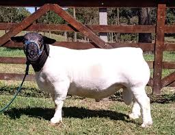
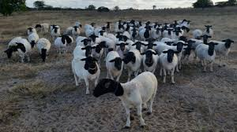

Título do Blog
Conheça Felipe das Dorper:
Excelência em Criar e Vender Ovinos da Raça Dorper
Se você busca qualidade, conhecimento e paixão pela criação de ovinos Dorper, Felipe das Dorper é o nome que você precisa conhecer. Com uma dedicação incansável ao longo dos anos, Felipe se estabeleceu como um criador renomado, reconhecido não apenas pela qualidade superior de seus animais, mas também pelo compromisso com o bem-estar e a sustentabilidade.
Localizado nas encantadoras paisagens que abrigam sua criação, Felipe não apenas oferece animais robustos e adaptados, mas também compartilha seu expertise com criadores iniciantes e experientes que buscam aperfeiçoar suas práticas e melhorar seus rebanhos.
Cada animal criado por Felipe das Dorper reflete anos de cuidado meticuloso e seleção criteriosa, resultando em exemplares que são sinônimos de resistência, conformação ideal e produtividade. Seja para melhorar seu rebanho, iniciar um novo projeto de criação ou simplesmente adquirir animais de qualidade superior, Felipe é seu parceiro ideal.
Além de sua excelência na criação, Felipe das Dorper também oferece um atendimento personalizado e transparente, garantindo que cada cliente receba não apenas o melhor animal, mas também todo o suporte necessário para alcançar seus objetivos na pecuária ovina.
Conheça Felipe das Dorper e descubra por que sua reputação como criador e vendedor de ovinos Dorper é amplamente reconhecida. Entre em contato hoje mesmo e leve para sua fazenda o futuro da pecuária ovina, com a garantia de qualidade que apenas Felipe das Dorper pode oferecer.

A História da Raça Dorper: Resistência, Adaptabilidade e Sucesso Global
A raça Dorper, renomada por sua resistência e adaptabilidade, tem uma história fascinante que remonta ao início do século XX na África do Sul. Desenvolvida pelo cruzamento entre o Dorset Horn, uma raça britânica robusta, e o Blackhead Persian, uma raça persa adaptada ao clima árido, os Dorpers foram criados com um objetivo claro: resistir às duras condições climáticas e prosperar em pastagens semiáridas.
O nome "Dorper" combina partes dos nomes de suas raças parentais: "Dor" do Dorset e "per" do Blackhead Persian. A seleção inicial foi realizada por volta de 1930 pelo Departamento de Agricultura da África do Sul, focando em características como boa adaptação a climas quentes e secos, alta fertilidade, habilidade de pastoreio eficiente e carne de excelente qualidade.
Ao longo das décadas, a raça Dorper foi refinada para ser um dos ovinos de carne mais procurados globalmente, devido à sua capacidade de produzir carne magra e saborosa com uma mínima necessidade de alimentação suplementar. A adaptação dos Dorpers não se limitou à África do Sul; eles se espalharam por todo o mundo, conquistando criadores e agricultores em climas variados, desde regiões áridas até pastagens mais úmidas.
Os Dorpers são reconhecidos por sua aparência distintiva, com cabeça preta ou marrom e corpo branco, além de características como ausência de lã na cabeça e nas pernas, o que os torna menos suscetíveis a carrapatos e outros parasitas. Sua habilidade de prosperar em pastagens áridas e sua adaptabilidade a diferentes sistemas de manejo fazem deles uma escolha preferida não apenas para a produção de carne de alta qualidade, mas também para a sustentabilidade ambiental.
Atualmente, a raça Dorper continua a desempenhar um papel crucial na indústria global de carne ovina, sendo valorizada por sua eficiência na conversão de alimentos, vigor genético e capacidade de se adaptar a ambientes desafiadores. Criadores como Felipe das Dorper exemplificam o compromisso contínuo com a excelência na criação e venda de ovinos Dorper, garantindo que essa raça continue a prosperar e aprimorar a pecuária ovina em todo o mundo.
